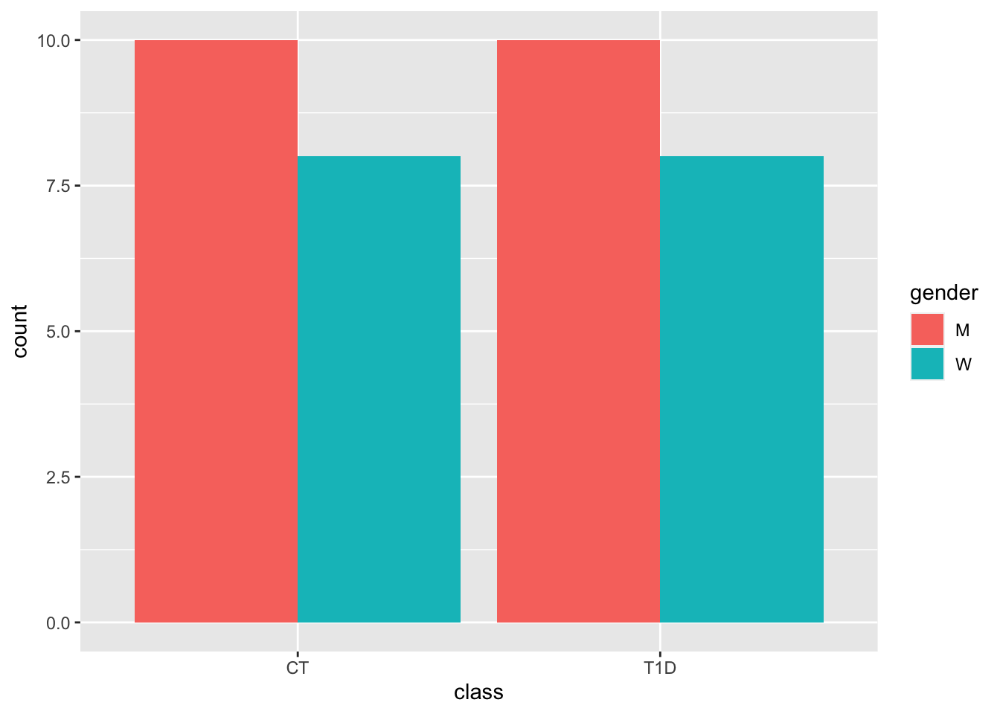
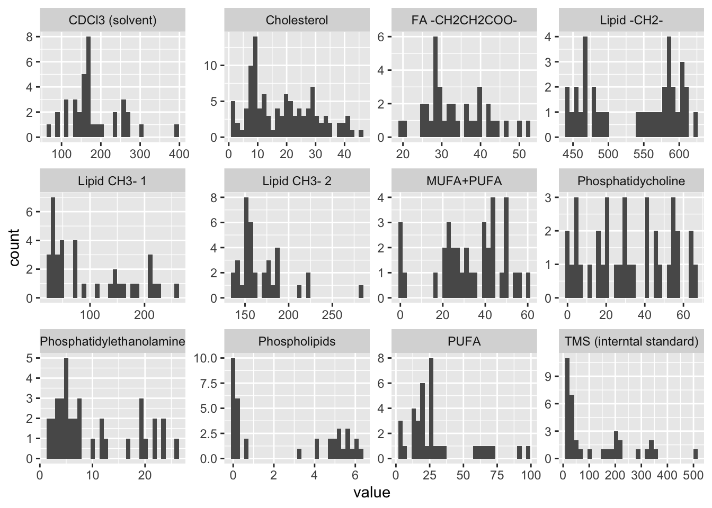

| Metabolite | Mean SD |
|---|---|
| CDCl3 (solvent) | 180 (67) |
| Cholesterol | 18.6 (11.4) |
| FA -CH2CH2COO- | 33.6 (7.8) |
| Lipid -CH2- | 536.6 (61.9) |
| Lipid CH3- 1 | 98.3 (73.8) |
| Lipid CH3- 2 | 168.2 (29.2) |
| MUFA+PUFA | 32.9 (16.1) |
| Phosphatidycholine | 31.7 (20.5) |
| Phosphatidylethanolamine | 10 (7.6) |
| Phospholipids | 2.7 (2.6) |
| PUFA | 30 (24.1) |
| TMS (interntal standard) | 123 (130.4) |
Analysis of lipidomics
Sara Stinson ![]()
Abstract
Objective:
Research Design and Methods:
Results:
Conclusions:
Introduction
Research Design and Methods
Results

`stat_bin()` using `bins = 30`. Pick better value with `binwidth`.
# A tibble: 12 × 6
metabolite term estimate std.e…¹ statis…² p.value
<chr> <chr> <dbl> <dbl> <dbl> <dbl>
1 TMS (interntal standard) metabolite_tms_i… 5.62e- 2 9.90e-1 -2.91e+0 0.00363
2 Cholesterol metabolite_chole… 2.97e+ 0 4.58e-1 2.38e+0 0.0175
3 Lipid CH3- 1 metabolite_lipid… 4.45e+ 1 1.41e+0 2.70e+0 0.00697
4 Lipid CH3- 2 metabolite_lipid… 8.85e- 1 3.61e-1 -3.39e-1 0.734
5 Lipid -CH2- metabolite_lipid… 2.59e- 3 3.14e+0 -1.90e+0 0.0578
6 FA -CH2CH2COO- metabolite_fa_ch… 1.52e+ 0 3.87e-1 1.09e+0 0.276
7 PUFA metabolite_pufa 3.27e+ 0 5.60e-1 2.11e+0 0.0345
8 Phosphatidylethanolamine metabolite_phosp… 2.69e+ 1 1.32e+0 2.49e+0 0.0129
9 Phosphatidycholine metabolite_phosp… 1.28e-120 1.17e+5 -2.37e-3 0.998
10 Phospholipids metabolite_phosp… 2.39e- 19 6.90e+4 -6.22e-4 1.00
11 MUFA+PUFA metabolite_mufa_… 4.56e- 1 4.49e-1 -1.75e+0 0.0798
12 CDCl3 (solvent) metabolite_cd_cl… 8.70e- 2 8.65e-1 -2.82e+0 0.00475
# … with abbreviated variable names ¹std.error, ²statistic